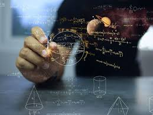

A farmer wanted to pump water from a river to irrigate crops. The solution involved machines, energy, pressure, and motion. Without realizing it, the farmer was using Physics. Physics helps us understand how machinery, energy, and technology improve agricultural productivity.
Physics is the study of matter, energy, forces, motion, electricity, and natural laws. In agriculture, Physics helps explain how farm machinery works, how irrigation systems operate, and how technology improves food production.
Modern agriculture relies heavily on Physics. Tractors, harvesters, irrigation systems, drones, solar-powered pumps, and agricultural machinery all depend on physical principles. Physics is one of the foundations of agricultural technology.
This is only a small introduction. If you want to understand how programmes connect to university courses, careers, opportunities, and future success, get a copy of:
The guide designed to help students make informed decisions about their future and discover opportunities they may never have considered.